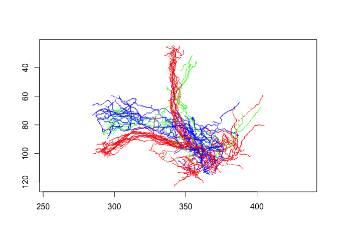

The natverse package is a wrapper for all of the commonly used NeuroAnatomy Toolbox packages. This is convenient both for package installation and for loading/attaching these packages without many calls to library().
See http://natverse.org for more details.
Installation
The recommended approach to install the full natverse is to use a helper package natmanager, which is available on CRAN. You can therefore do:
install.packages("natmanager")
natmanager::install("natverse")See http://natverse.org/install for more details.
Use
Once installed, you can load the natverse package:
library(natverse)
#> Loading required package: elmr
#> Loading required package: catmaid
#> Loading required package: httr
#> Warning: package 'httr' was built under R version 3.6.2
#> Loading required package: nat
#> Loading required package: rgl
#> Warning: package 'rgl' was built under R version 3.6.2
#> Registered S3 method overwritten by 'nat':
#> method from
#> as.mesh3d.ashape3d rgl
#>
#> Attaching package: 'nat'
#> The following object is masked from 'package:rgl':
#>
#> wire3d
#> The following objects are masked from 'package:base':
#>
#> intersect, setdiff, union
#> Loading required package: nat.flybrains
#> Loading required package: nat.templatebrains
#> Loading required package: nat.nblast
# example 3D plot of some neurons
plot(kcs20, col=type)
Installation Details
Conflicts and Dependencies
The natverse package contains many packages and it is possible that there could be conflicts where functions in the natverse have the same name as another package.
natverse_conflicts()
#> ── Conflicts ─────────────────────────────────────────────────────────────── natverse_conflicts() ──
#> x nat::intersect() masks base::intersect()
#> x nat::setdiff() masks base::setdiff()
#> x nat::union() masks base::union()
#> x nat::wire3d() masks rgl::wire3d()You can always choose the correct version by prepending the specific package name e.g. nat::flip() will select the nat version rather than any other.
Updates
Once installed, you check the status of all natverse packages and their dependencies like so:
natverse_update()
#>
#> The following packages are either locally installed or information about them is missing!
#>
#> blob, formattable, import, mockr, nycflights13, pingr, fafbsegdata, reticulate, nat
#>
#> Please install them manually from their appropriate source locations
#>
#> The following natverse dependencies are out-of-date, see details below:
#>
#> We recommend updating them by running:
#> natverse_update(update=TRUE)
#>
#> package remote local source repo status
#> -------------- ------------- ------------- ------- -------------------------- -------
#> bit64 0.9-7.1 0.9-7 CRAN https://cran.rstudio.com/ x
#> data.table 1.13.0 1.12.8 CRAN https://cran.rstudio.com/ x
#> elmr deb0e27df... 7a2be4537... GitHub natverse x
#> ff 2.2-14.2 2.2-14 CRAN https://cran.rstudio.com/ x
#> flycircuit 1b7b48e29... cc4594f47... GitHub natverse x
#> git2r 0.27.1 0.26.1 CRAN https://cran.rstudio.com/ x
#> insectbrainr 6331b4df6... 8fef94a05... GitHub natverse x
#> mouselightr 9c2ce1c31... 8e26b7702... GitHub natverse x
#> nat.flybrains 28ff33213... 36c622a15... GitHub natverse x
#> nat.jrcbrains 85ed4a791... 44c95667e... GitHub natverse x
#> neuprintr 7403d3ce2... 8ab03b744... GitHub natverse x
#> RCurl 1.98-1.2 1.98-1.1 CRAN https://cran.rstudio.com/ x
#> tibble b4eec19dd... 3f4e5dfae... GitHub tidyverse x
#> tidyr 1.1.0 1.0.3 CRAN https://cran.rstudio.com/ x
#> xfun 0.16 0.15 CRAN https://cran.rstudio.com/ x
#> XML NA 3.99-0.3 CRAN https://cran.rstudio.com/ xYou can then update like so:
natverse_update(update = TRUE)However, if you are in a hurry and want to save time from the questions use like below:
natverse_update(update=TRUE, upgrade = 'always')If want to upgrade the natverse package itself:
remotes::update_packages('natverse')